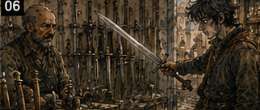
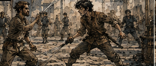
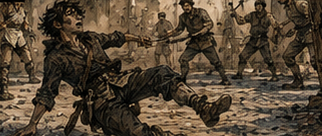

I paid Hessa first. That was new. Not paying people. I had always paid people eventually. Paying the sensible thing before the interesting thing. I put the training money aside before breakfast, counted what remained, and felt briefly pleased with myself. Then I went gambling. Three nights later, I had more money than I had possessed since waking up. Five nights later, I had less. This was not, strictly speaking, the gambling's fault. That distinction mattered to me. It did not matter to the coins. The gambling worked. That was the problem.
The White Dog became easy faster than it should have. Not easy in the sense that I could sit down and demand money from the universe. Cards remained cards. Dice remained dice. Bad hands existed. Stupid luck existed. A drunk dockworker once called a bet he had absolutely no business calling and drew the one card that could save him. I disliked him personally for almost six minutes. But people were astonishingly repetitive. Not all people in the same way. That would have been useless.
Individual people. That was the trick. Give me an hour and I knew who protected winnings, who chased losses, who bluffed when embarrassed, who lied better after drinking, who lied worse, who needed to be seen as fearless, who hated folding to younger men, who watched the cards, who watched the pot, and who watched me. The last group was the dangerous one. So I moved rooms.
The White Dog one night. The Copper Nail the next. A guild game behind a cooper's shop. A private table I got invited to because Osric apparently decided losing money to me was more enjoyable when accompanied by better wine. I won. Not always. Enough.
Silver became less frightening. Then, almost immediately, less real. That was how fast my brain betrayed me. The first few winnings had been food. Training. Rent. Breathing room. The next few became capital. Capital became possibility. Possibility became permission. I funded another round of Pell's tests. Reasonable. I bought better food because Hessa had told me to.
Reasonable. I replaced my cracked boots. Also reasonable. Then I bought a sword. That required more explanation. I already owned a sword. Technically. The object in my room had an edge, a hilt, and a history of being used on firewood. It was a sword in the same sense that I was currently a mage. Potentially. I wanted something balanced. Not expensive. There was a difference. I knew the difference. I had spent decades around excellent weapons. That should have helped. It did help.
A little. It also convinced me to spend far more than I had intended because I could feel every defect in the cheaper blades. The third sword I tested pulled slightly forward. The fourth had a grip too narrow for my hand. The fifth was competent. I should have bought the fifth. The sixth was beautiful. Not jeweled. Not ceremonial. Nothing stupid. Just balanced.

The kind of balance you did not notice until you picked up something worse afterward. I made three cuts in the shop's practice lane. The blade stopped where I wanted it. My wrist remembered things. My shoulder remembered more. Something in my chest opened.
"Oh," I said.
The smith looked at me.
"You buying it?"
I looked at the price. That was too much silver. Old Greg said it was nothing. Young Greg's coin purse said otherwise. I bought it. On the walk home I constructed a very sophisticated argument explaining why this was an investment in accelerated martial development. By the time I reached my room, I almost believed it. I added a line to the board.
WARRIOR?
I looked at the word until the question mark annoyed me. Warrior Greg was familiar. That mattered more than it should have. I knew how he stood. What he wore. What he did when frustrated. Give him a sword and a problem with a face and the world became wonderfully narrow. Maybe I wanted the profession. Maybe I wanted the role because I already knew how to disappear inside it. Then I stood back.
Why not? The question had been bothering me since Hessa's first assessment. I had accepted my first life's shape too quickly. Warrior first. Plateau. Barrier. Support. Versatility. S-class. That sequence had become biography, and biography had quietly become destiny. But it had not been destiny the first time. It had been a collection of decisions made by a younger, stupider Greg with less information. I knew why warrior Greg had plateaued.
Mostly. Probably. That last word irritated me. I wrote:
WHY WAS I ONLY AN OKAY WARRIOR?
Strength? I had been strong enough. Speed? Courage? Unfortunately abundant. Technique? I paused.
That was the word. I had never been elegant. I had never been the fighter people watched and whispered about. I had been effective enough to pass stat checks. That phrase came from much later, from a Silver-ranked swordswoman whose name I could not remember and whose criticism I had resented because it was accurate. Greg wins because Greg can afford the hit. Greg wins because his reinforcement is better. Greg wins because his barrier catches the mistake. Greg wins because the other man gets tired first. Greg wins because somebody made the mistake of letting Greg prepare. Later, once I had magic, I had humiliated better swordsmen by making the contest unfair. I liked doing that. That was worth admitting.
There had been something delicious about watching a technically superior fighter realize technique did not matter if I could reinforce my legs, blunt his best strike, accelerate at the wrong moment, and turn a clean duel into a mathematics problem he had not agreed to solve. People called it dirty. I called it winning. But before magic? I had been okay. Just okay.
Which raised an interesting question. How much better could I be if I learned it correctly this time? I knew what elite footwork looked like. I knew why good fighters conserved motion. I knew what panic did to breathing. I knew how shields failed. I knew what angles killed people. I had watched monsters move. I had watched S-class warriors move.
More importantly, I had spent decades making those warriors better. You learned a great deal about a person's mechanics when your job was to amplify them without tearing their muscles apart. Maybe first-life Greg had never lacked martial potential. Maybe he had lacked education. That was a flattering theory. I liked it immediately. Dangerous. I wrote it down anyway. The guild practice yard charged by the hour. Of course it did. Everything charged by the hour now.
I paid. Silver. A stupid amount of silver for access to sand, posts, battered shields, and men who smelled like leather. I did not care. I wanted to move. That was the part the board could not solve. I was tired of sitting. Tired of remembering. Tired of explaining to Pell what I thought might happen. Tired of Hessa telling me to breathe slowly while trying to feel something that had once answered me like another limb. Tired of cards. Even winning at cards involved sitting down. I wanted my body to do something.
More specifically, I wanted to be somebody who did things. The borrower waited. The investor watched Pell. The student obeyed Hessa and breathed on command. The gambler sat and studied faces. The warrior moved. I knew which one I preferred that morning. So I trained. And for twenty minutes I was a genius. My stance was cleaner than I remembered. My grip changed automatically. I stopped loading my shoulder before cuts.

I shortened movements I had once made dramatically because nineteen-year-old Greg had apparently believed enemies were impressed by commitment. I moved around a post and saw mistakes before I made them. This was going to work. Of course it was. Why had I ever doubted it? I was not relearning swordsmanship. I was correcting it. Different thing. Faster thing. I worked through basic cuts.
Transitions. Recovery. Advance. Retreat. Pivot. Again. Again. Again. My body learned quickly. Not magically. But quickly enough that I could feel old understanding finding new joints. I laughed. Actually laughed. A man training two lanes over glanced at me. I did not care. This was good. This was movement. This was mine. Then my legs started shaking. Not metaphorically.
I stepped back after a cut and my rear leg failed to put me where my mind had already decided I would be. I stumbled. Caught myself. Looked down. My legs offered no explanation. I tried again. Slower. The movement worked. Again. Faster. My calf tightened. My thigh burned. My lungs had started working much harder than I had noticed.
Right.
Nineteen-year-old body. Bronze conditioning. Not sixty-year-old knowledge wearing an S-class chassis.
"Fine." I rested.
For almost a minute. Then started again. That was the first mistake. The second was deciding fatigue made the test more useful. The third was noticing a broad-shouldered Bronze warrior watching me and asking if he wanted to spar. He looked at my token. Then at me.
"Sure."
That tone. I knew that tone. Young. Confident. He thought I was going to be easy. Wonderful. His name was Jorren. Or Joran. No, Jorren. He told me twice. I forgot once because I was watching his feet. He had better conditioning than me. Probably stronger. His guard was too high. He planted before committing. His right shoulder tightened before a heavy cut. I knew him in thirty seconds.
Not him. His fight. Close enough. We used blunted practice swords. First exchange, he hit me. I got up anyway. I had seen it coming. That was irritating. Seeing and moving were not the same thing. I reset. Second exchange, I made him miss. Third, I touched his ribs. Fourth, he hit my shoulder. Fifth, I touched his wrist. He frowned. Sixth, I let him think he had found the shoulder again, stepped inside the line, and put the practice blade against his throat.
He froze. I smiled. There it was. That old pleasure. Not winning. The moment someone realized the contest they thought they understood was not the contest they were in.
"You've done this before," Jorren said.
"Yes."
"You're Bronze."
"So are you."
"That's not what I meant." I liked him slightly more for that. We went again. I won the next exchange. Lost the next two.
Won another. Then lost badly because my foot dragged half a beat behind the decision. Jorren's practice sword hit my ribs. I went down. The sand was warm. I lay there staring upward. My mind had known exactly what to do. My body had simply declined. That was new. Old. I had just forgotten. Jorren offered a hand.

"You all right?"
"Excellent." He looked concerned.
"I'm fine."
That was more believable. I took his hand. He pulled me up.
"You're weird."
"I've heard that."
"You fight like an old man." I stared at him. He laughed.
"Not slow. Just... you know."
"Like you already know what I'm going to do."
Oh. That was interesting.
"Again," I said. He looked at my breathing.
"Maybe tomorrow."
I disliked him again. On the walk back, my ribs hurt. My legs hurt. My shoulder hurt. I felt fantastic. The conclusion was obvious. Warrior Greg had been salvageable. More than salvageable. I could be better this time. Maybe much better. Not because I had become stronger. Because I knew what mattered. I added another training session the next day. That cost money.
Then another. Money. I paid a Silver-ranked instructor for an hour because I wanted someone better than Jorren. More money. The instructor corrected my stance twice, my recovery six times, and told me my instincts were ahead of my mechanics. I considered that confirmation. It was also criticism. I mostly heard confirmation. I gambled that night and won enough to cover it. So I booked him again. Then lost at cards the following night.
Not much. Enough. The next night I won. The night after that I lost badly. That one was my fault. I knew it while doing it. The table was new. Higher stakes. The players were better. I had already lost twice and should have left. Instead I stayed because I had learned them. Almost. Almost was an expensive word. I had Senna's voice in my head. Learn quieter. I had my own rule on the wall.
LEAVE THE TABLE WHEN THE DAY IS SOLVED.
The day was not solved. That became my excuse. I chased. Not cards. Information. One more hand and I would understand the man across from me. One more and I would know whether the twitch near his mouth meant excitement or irritation. One more. One more. He knew I was studying him. I did not realize he was studying me. That cost me. A lot. I walked home with less money than I had started the week with.
Still fine. Annoying. Recoverable. I had Hessa money set aside. Except I had spent part of it on the second sword lesson. Not all. Some. The distinction felt important until I counted. I stared at the coins.
"That's inconvenient." I could win it back. That was the worst sentence I had thought all week. I knew it immediately. I went gambling the next night anyway. I won. I paid Hessa. I bought food.
I put more money into Pell because one of his tests had improved again and stopping now seemed idiotic. Then I found a set of used vambraces at a price I considered absurdly low. They were absurdly low. I bought them. Good purchase. Still money. A week became a pattern. Win. Spend. Invest. Train. Lose. Win. Borrow against what I expected to win. That last part happened quietly. Antonius made it easy. Of course he did.
"You've been paying on time," Antonius said.
"I told you I would."
"You've also been borrowing again."
"Capital efficiency."
"Is that what we're calling it?"
"Do you have a better term?"
"Compulsion." I smiled. He did not.
That should have mattered more. We sat in the same back room where he had first decided I was worth risking money on. The room looked smaller now. Or I felt larger. Dangerous distinction. Antonius tapped the ledger.
"Shale."
"Long-term."
"Magic training."
"Investment."
"Sword instruction."
"Also investment."
"Gambling."
"Income." He looked up.
"You're very good at naming things."
"I've had practice."
"Are you good at any of them?"
That irritated me. Which meant it was a good question.
"Yes."
"Which?" I opened my mouth.
People. Gambling. Learning. Strategy. Swordsmanship, potentially. Magic, eventually. Investing, once properly capitalized. The answer became less impressive the longer it took. That was becoming a pattern. When nobody told me what problem to solve, I generated enough problems to occupy a committee. Then I tried to solve all of them because leaving an advantage unused felt irresponsible. It had felt like ambition in my first life. Sometimes it had even looked like leadership.
Antonius noticed. Of course he did.
"Several," I said.
That got the smallest smile.
"That's what worries me."
"I can service the debt."
"You can service today's debt."
"Same thing." I disliked how quickly he said it. He turned the ledger toward me.
Numbers. Actual numbers. I hated actual numbers when they disagreed with conceptual numbers. My original loan. Interest. Second advance. Third. Payments. Another advance. Fees. The sword instructor I had paid through a guild note because I had been short that afternoon. Pell's material order. A gambling stake Antonius's man had covered when I arrived without enough coin because I knew the table was good. I stared at that one.
"I borrowed to gamble?"
"You told Rusk it was working capital."
"It was." Antonius leaned back.
"You're very good at naming things."
Right.
I counted mentally. Then again. The debt was not catastrophic. Not yet. But it had grown. More importantly, I did not have the money to clear it. I had assets. Sort of. A promising material project. Training. A good sword. Used vambraces. Skills. Potential. None of those were coins. Antonius preferred coins. Reasonable.
"When is the next payment?" I asked. He told me.
Soon. I nodded.
"I can make that."
"I know."
That surprised me. Antonius folded his hands.
"The question is what you do after."
"Continue."
"Of course."
"What would you suggest?"
"Stop borrowing." I laughed. He did not.
"Oh."
"Pay me. Gamble with your own money. Train with your own money. Buy garbage rocks with your own money."
"Kestrin shale."
"Garbage rocks."
"It's going to matter."
"Maybe."
"It will."
"Then it can matter slowly."
That was almost exactly what I had told myself. I resented him for stealing it.
"I need speed."
"Why?"
The answer was obvious. Because I had already lost forty years once. Because every month I wasted was a month I could have compressed. Because somewhere ahead were wars, collapses, dungeons, people I had failed, people I could reach earlier, mistakes I could prevent, opportunities that would disappear if I arrived late. Because being nineteen again did not feel like having extra time. It felt like being behind. I said none of that.
"I have plans." Antonius watched me.
"Everyone with debt has plans." I left irritated.
Antonius had done something annoyingly useful, though I did not recognize it yet. He had reduced the board. Pay this amount. By this time. Stop inventing twelve reasons the debt was strategically interesting. I was much less comfortable with a smaller board. I was also, historically, much better on one. That irritation lasted until Hessa made me hold a mana response for four breaths instead of three. Then I forgot Antonius entirely.
Four. Not much. Everything. My hand tingled. The sensation was still pathetic compared with what I remembered. But it was mine. Afterward I went directly to the practice yard. That was stupid. Hessa had told me not to. Specifically. Mana conditioning taxed the body. Sword training taxed the body. Recovery mattered. I knew recovery mattered. I had lectured people about recovery. I had magically forced people through failed recovery and watched the consequences. But I felt good.
Young. Alive. Moving. So I trained. The Silver instructor was unavailable. Jorren was there. He grinned when he saw me.
"Old man."
"Statue."
"You plant your feet."
"Fuck you."
"See? Emotional too."
We sparred. I was better. Noticeably. That was all the evidence I needed. My timing had improved. My body was catching up. Not quickly enough, but catching. I baited his heavy right twice. Punished it twice. The third time he adjusted. I adjusted back.
Better.
He clipped my arm. I touched his chest. He swept my leg. I fell. Got up. Again. For a while there was no future. That was what I liked. No forty-year index. No names. No debts. No people who were dead but currently alive. There was Jorren's shoulder. My foot. His breath. Distance. Move.
I had forgotten how clean action could be. Maybe that was why I had become a warrior the first time. Not because I was good at it. Because I liked it. That realization bothered me. I had spent years telling the story differently. Young Greg wanted glory. Young Greg was stupid. Young Greg thought swords were impressive. All true. Incomplete. Young Greg liked moving. So did I. Jorren came in high. I stepped left.
Pivot. Drive through. Perfect. Except my leg did not move. For half a heartbeat the movement existed perfectly in my head and nowhere else. My mind had already completed the step. My exhausted leg had not. Jorren hit me in the chest. I landed on my back hard enough to knock the breath out of me. I stared at the sky and felt offended by biology.
"Greg?" Jorren asked.
"Fine," I wheezed. He leaned over me.
"Excellent." He continued staring.
"That means yes."
It did not. Hard. Warrior Greg did not stay in the sand because his legs were tired. That was exactly the sort of stupid sentence Warrior Greg believed. I believed it too. I went home exhausted. I should have slept. Instead I counted money.
Bad.
Very bad. Payment soon. Hessa due after that. Pell wanted another material batch. The sword instructor had offered a discounted block of five sessions if I paid upfront. Discounted. That made it economical. I wrote the amount down. Then stared at it. Progress. I crossed it out. Then wrote it again smaller. Potentially. I needed money. I knew how to make money.
Cards. Simple. I went out. The table was wrong. I knew that within twenty minutes. I stayed. The first player was unreadable because he was drunk enough that his own intentions changed between looking at his cards and placing the bet. The second was good. The third was better. The fourth was lucky. I hated the fourth. I lost. Not badly. Then badly. Then recovered half.
That should have been the exit. Instead I saw the line. The second player protected large pots. The third player attacked weakness. The drunk had become irrelevant. The lucky idiot was overconfident. I could turn them against each other. I had done harder things with entire adventuring parties. I stayed. An hour later, I owed the table. Not much. Enough. I could cover it tomorrow. I signed a note. That was normal.
Wasn't it? Probably not. I walked outside. Rusk was waiting. Antonius's man. Large. Quiet. I had met him twice. He looked at me. I looked at him.
"That's efficient," I said.
"Antonius wants to see you."
"Now?" Rusk looked at the sky.
"Do you have another appointment?" I considered lying. He knew I did not. People-reading worked both ways.
"Reasonable." Antonius had the new note before I arrived. Of course he did. He placed it beside the ledger. Did not speak. I sat.
Also did not speak. That lasted longer than I liked. Finally I said, "Temporary." Antonius nodded.
"Winnable."
Another nod.
"I know what I did wrong."
That got him.
"I stayed after the table changed." I frowned.
"That's exactly what happened."
"You think your problem is the game."
"It was a gambling loss." He pushed the ledger toward me.
"Your problem is you think being able to explain a mistake means you can afford it." I stared at him. That was annoyingly good.
"I can make the payment."
"Tomorrow?" I calculated.
Maybe. He saw the calculation.
"No," Antonius said.
"I didn't answer."
"You did."
I looked at the ledger again. There were too many numbers now. Not enormous numbers. That was the humiliating part. I had once moved sums that would make this entire room look like pocket change. Now a few silver in the wrong direction had become a man across a desk deciding what happened to my week. I hated it. I hated him a little. Mostly I hated the scale. Antonius tapped the note.
"You'll work it." I looked up.
"You heard me."
"I can gamble it back."
"I can."
"I know."
That stopped me. Antonius leaned forward.
"That's why you're not going to." I laughed once. He did not.
"You don't get to decide whether I gamble."
"I decide what happens when you owe me money you cannot pay."
"I can pay."
"Not tonight."
Silence. There it was. The contract. Creditor labor. I remembered the phrase because I had considered it almost funny when I signed. Eight days. Thirty-five percent. If I defaulted, labor at Antonius's direction until the balance was satisfied. At the time I had been thinking about future industries. Now I was thinking about hauling crates.
"Excellent," I said. Antonius smiled.
There was no warmth in it.
"Tomorrow morning."
"What am I doing?"
"Whatever I need."
"I have training."
"Move it."
"Hessa doesn't move."
"Then pay me." I looked at the ledger.
Could not. Not without borrowing. From him. That seemed structurally unsound. Antonius watched the realization arrive.
"You wanted capital," he said. "Now you get to learn what it costs." I wanted to tell him I already knew. I had financed expeditions.
Negotiated credit. Built ventures. Watched kingdoms borrow against tax years that had not happened yet. I understood debt. Conceptually. Apparently conceptually was doing a lot of work in my second life. I stood.
"How long?"
"Until I trust the numbers again."
"That's not a number."
"I dislike you."
"I can live with that." I walked to the door.
"Greg." I turned. Antonius looked at the sword at my hip.
"Nice sword." I looked down at it. The sixth sword.
Beautiful balance. Excellent purchase. Investment in accelerated martial development. I had bought it with money I did not have. For the first time, it looked expensive.
"Fuck you," I said. Antonius laughed.
Outside, I started walking home. My legs hurt from training. My ribs hurt from Jorren. My hand still held the faint memory of mana. The sword moved comfortably at my hip. Both legs worked. For now, everything worked. That was the problem. When things worked, I assumed they would continue working. Cards. Memory. Investments. Bodies. People. Me. I knew better.
I had forty years of evidence that I knew better. I kept doing it anyway. Tomorrow Antonius owned my morning. Hessa owned part of my afternoon. Pell wanted money I no longer had. The gambling tables were temporarily forbidden unless I wanted to discover how patient Antonius really was. And Warrior Greg, apparently, was back.
That was comforting in a way I did not entirely trust. I could be broke and still know how to be the warrior. I could be frightened and become the borrower who smiled at Antonius. I could sit at a table and become whatever version of myself made the other players easiest to read. There was always another Greg available when the current one became inconvenient. I had spent most of my life calling that adaptability. For now, I still liked the word. I should have felt trapped. Instead, halfway home, I caught myself thinking about how to make creditor labor useful. I stopped walking.
I waited. The thought remained. If Antonius was going to force me to work, then I would see his operation from the inside. That thought arrived differently from the others. It did not branch first. Antonius had already supplied the walls. I only had to inspect what was inside them. That was easier. I found that irritating too. People. Routes. Goods. Clients.
Debtors. Information. Access. I could learn. I could make myself useful. Useful became leverage. Leverage became options. I smiled. Then remembered what Antonius had just said. Being able to explain a mistake did not mean I could afford it. The smile faded. Mostly.
"Still," I said.
And kept walking.